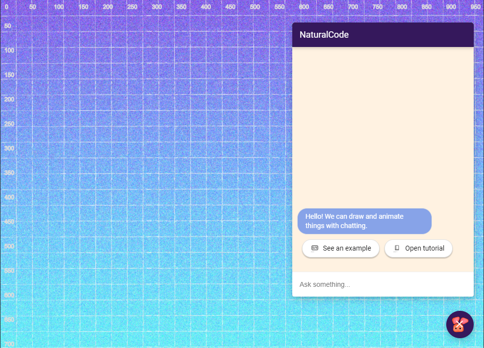

We developed this language (programming environment/test platform for natural algorithmic conversation) to incorporate chatbots and natural language to create an algorithmic conversation experience. When the repl.it repo is run, the figure below will be seen. We included pixel values similar to a ruler on the screen to help better plan the user's code.

You can draw and animate things on the screen. The system is powered by p5.js, a Javascript client-side library for creating graphic and interactive experiences, based on the core principles of Processing. Let's see one example to understand the experience better. To open the example on our system, type "See an example" as illustrated below.

To draw a rectangle on the canvas, you can simply say "Draw a rectangle", "Draw a rect", "rect", "rectangle", "Draw a rectangle at 100, 100", "Rect at 120, 200, with size 300, 400"... These commands will all draw some rectangles at different positions with different size.

When the system processes your command, the result will automatically appear on the canvas.
Programming is the process of choosing the appropriate instructions to describe a specific task on a computer. It is like telling a recipe to your neighbour; you try to describe the steps precisely so the others can follow these steps and cook the exact same meal. Similar to recipes, programming languages let programmers list specific instructions in order to compute a task in a computational device and make the task understandable for the majority of programmers. Even if you call the same steps while applying the recipe, if you add some flavours more or cannot find one ingredient, the results change significantly. Maybe, instead of asking what is the best way to describe a computer program with a programming language, we can ask what is the best way to tell a recipe?
If we take a quick look at the history of programming languages we notice a trend in abstraction and see a sustained effort to improve the languages in a human-friendly format. In today's programming environment, this trend becomes more and more popular as the purpose of programming is building the bridge between humans and computers. However, fifty years ago, the majority of programmers would see this trend as an absolute misuse of valuable scientific resources [ref: http://worrydream.com/dbx/].
Recently, the natural language models show significant success in understanding the human language and as a result, developers show some examples of building HTML and CSS web content with only explaining the end product. After all, will we be able to tell the computer what we want to build as a final product and will computers generate this final product? Will our programming habits change? Before answering these questions, we still need to find answers to the following questions (You can check Quora Page to see some possible answers from different point of views):
- Is our natural language specific enough to tell a computer exactly what to do?
- Would programmers be more comfortable with natural language rather than current programming languages?
In this programming task, rather than build a programming language, we wanted to explore the nature of the communication between human and computer and designed a prototype on building programs together with a chatbot.
Another focus of this programming environment is to prototype ideas fast. Imagine, you would like to create an animation on the web. As a novice programmer or excited maker, you have numerous choices for programming libraries. You can use p5.js, paper.js, or create a web application with Python or JAVA. This chat environment behaves like a programming language that interprets your commands as algorithmic steps and chooses the best methods for easy prototyping.
As we found a chance to write something on programming languages {:):)}, we wanted to share all the development process of the programming environment, examine the history of programming languages, modern programming paradigms, potential applications with AI and potential use cases for our chat-programming application.
Given that our design is based on natural dialogs, there is likely to be ambiguities in these conversations. We should decide on how we will handle the ambiguity of the programming commands. When the system encounters perfectly specified parameters, there is no problem.
Mıost importantly, we have two options when the system cannot find all required parameters. The first is to define default values, render the command with these default values and enable programmers to change the parameters directly from the Javascript code. The second option is asking the parameters one by one until we get all the required parameters.
While developing programs through a conversation with a chatbot, the interpreter will save the algorithm as Javascript code.
Technical Specifications
We used repl.it for easy prototyping, hosting the web server, and let others to easily fork and remix the application.
Flask is required to handle the webhook calls coming from the Dialogflow and generate unique responses for changing parameters.
We prototyped the chatbot with Dialogflow. It is easy to use and fast to integrate with different development environments. Although the platform is designed to answer the most popular use case scenarios for business applications, our experiment revealed some interesting use cases and possible development needs, if we want to achieve a more humanly experience.
We wanted to design this environment as accessible as possible, so, to run the application on every device, we wanted to develop a web application. We used p5.js to create graphics on canvas, highlight.js to show the resulted Javascript code in a readable-format, fuse.js to correct the code if some letters are not correctly typed to the chatbot, jquery to handle UI operations.
Capabilities
We designed the interpreter model to be able to understand most p5.js commands. You can see the list of supported commands in the code.js file. The listed commands allow us to create shapes, stories, animations, diagrams and visualize our ideas. We choose p5.js as the core of the application as it is the most commonly used drawing library for the web and it has a growing community. But, in the next steps of the environment development process, to enable developers to solve different problems such as visualizing a data science problem or solving a machine learning problem, we will integrate libraries like d3.js or tensorflow.js.
Currently, the interpreter is capable of running programs with the commands in the code.js file. However, the chatbot design is not ready to run all the commands. So, as is, the system can run simple commands like drawing shapes, changing colors, moving elements or defining new variables, but cannot create conditionals, loops or functions yet.
We are designing this language for everyone and our aim is to make this language intuitive to use, so, they will start coding without reading any documentation. We are not reading any documentation before opening a cookbook and starting cooking, so we think that the experience should be similar. But, we are aware that while we are cooking we have some rooted knowledge from the real world like how much is a tablespoon or half a cup. So, we should first give the user the standards and we are ready to go.
In the design process, we tried to answer the two questions we mentioned earlier. Let's start with the first one, ‘Is our natural language specific enough to tell a computer exactly what to do?' The intuitive answer is NO, but we wanted to explore a few explanation texts from the Github CodeSearchNet dataset. This dataset is a large corpus of code, comments and human-annotated search values which is collected to enhance the sorting of code search at Github. The comments and annotations are mostly summarized the given code, and they are written for generating the code back, but it was useful to better see the pattern, how developers write code-related texts.
Exploring Github's dataset was useful to understand different patterns on explaining code to others, but these folk did not explain to a chatbot. So, we wanted some friends to explain some selected code from the Coding Train's tutorial. We also thought about analyzing Dan's explanations, but dude was talking so fast... So, if we make an analysis it will be another experiment with a system setup :)
Now, let's stick with our friends' possible to chat with a bot. See how one of our friends would talk to a bot for the following program from the Coding Train's nested loop tutorial:
It is one of the simplest forms of nested loops; we are just creating a nested loop for the width and height of the canvas and creating ellipses with the size of 25, 25 with the 50-pixel gaps.
A conversation goes like this when we show the code:
- Make background black
- Stroke weight is 4
- Stroke colour is white
- Create a for loop with the variable x, until x is hit to width, increase x by 50
- Create another for loop with the variable y, until y is hit to width, increase y by 50
- Fill colour with random red, 0 and random green component
- Create ellipses at the x and y positions with the size 25 and 25s
- Close both loops
Now, this conversation is very similar to pseudocode, but one important difference it actually follows the code lines very specifically. But, what if we did not show the code and just showed the resulted canvas, one conversation goes like this:
- Execute the following steps for each frame rate:
- Create a nested loop with the 40-pixel spaces
- Draw ellipses on loop's variable positions
- Fill these ellipses with random colour
Most of us witnessed the success of GPT3-model on building new content from the description. If you haven't seen one here is one example at Figma, how one plugin "magically" knows how to design a website from scratch:
Words → website ✨
— Jordan Singer (@jsngr) July 25, 2020
A GPT-3 × Figma plugin that takes a URL and a description to mock up a website for you. pic.twitter.com/UsJz0ClGA7
The GPT model shows success in creating structured documents such as HTML or XML, but we haven't seen any complex examples yet. We haven't seen any example of the GPT model that generates an interactive simulation with just some description. Our future goal will be to create JS Simulations that we can design interactive experiments and explorable explanations in ease. But, as you can see through this documentation, this task is not easy for our chatbot also and actually it is not really our natural instinct to create a simulation with just telling the details. When we create a physical simulation, we generally start drawing things and specify some details. So, maybe we should use dialogues after designing the general overview, to add details.
Let's visit this idea with an example. We chose a random simulation (it was the first sketch from Today's Picks list) from Open Processing: https://www.openprocessing.org/sketch/43171 This sketch simulates the behaviour of hydrophobic and hydrophilic phase separation.
After we play with the simulation, we took notes to describe this simulation to our future chatbot:
- It is a simulation for understanding the behaviour of hydrophobic and hydrophilic interactions. To simulate and control the interactions, we will create objects called Atoms.
- This atom model will be able to change its position, velocity, acceleration and electrical charge.
- The position vector will translate the position with a random walk.
- The velocity vector will define its velocity with a random value between -3 and 3.
- The acceleration will depend on the distance between the different types of Atom.
- The atoms will look like a circle and if the type is WATER it will be blue and if the atom is OIL it will be red.
- Now, I need to calculate the repulsion force, acceleration, velocities and positions. Based on the relationship between the defined atoms,
- The repulsion force will depend on the range, distance and magnitude variables. I will be calculated with the following formula:
distance = max(d, 0.1) (distance < range) ? magnitude * (range / d-1) : 0
Then we sketched the following interface, if we would be creating an object-oriented model with the power of our natural language. Here, the interface allow us to draw things by hand, and define this shapes as objects, equations or logical models, so it can construct the fundamental elements, and presents you to bind them together.
Now, the next steps will be to better understand Explorable Explanations, and how we can use our findings and expertise to develop better simulation development environments.